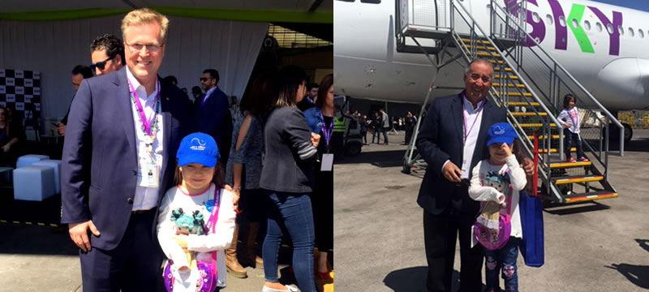
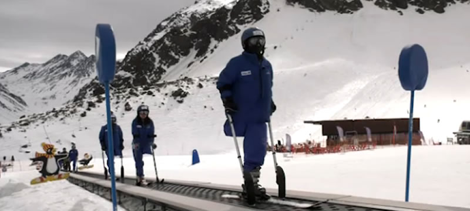

A volar con Sky
La Fundación Niño y Cáncer quiere agradecer a SKY por su increible invitación. El Miércoles 4 de Octubre fuimos a volar en su nuevo avión A320neoSky.
La Fundación Niño y Cáncer quiere agradecer a SKY por su increible invitación. El Miércoles 4 de Octubre fuimos a volar en su nuevo avión A320neoSky.
- Twittear
- Me Gusta
- Cómpartelo
Montana de la Alegria
Proyecto recreativo y psicoterapéutico que se realiza desde el año 2002. Se traduce en "Una Terapia para el Alma".
La Fundación Niño y Cáncer quiere agradecer la importante ayuda recibida que ha permitido realizar con un gran éxito el Taller de Ski, como parte del Programa Montaña de la alegría 2018. En esta oportunidad 3 niños Ecuatorianos, una niña Boliviana y 3 chilenos han podido disfrutar de su estadía en la Escuela de Montaña del Ejercito de Chile del 20 al 24 de Agosto 2018 aprendiendo a esquiar en Portillo.
Uno de nuestros beneficiarios presentó una pérdida de fuerzas de su extremidad inferior asociada a su enfermedad, por lo que fue atendido en S. Urgencia en Santiago y enviado a Ecuador el 22.08.18. Allá continuó su tratamiento y ha manifestad su alegría de poder haber disfrutado de este Taller, conocer la nieve, subirse a los esquíes, compartir con amigos incluso de otros países.
Todos los participantes aprendieron a esquiar gracias al incansable trabajo de los instructores y al esfuerzo personal que cada uno de nuestros pacientes.
- Twittear
- Me Gusta
- Cómpartelo
Finalizó proceso de postulación a Becas de Estudio 2018
El objetivo de este proyecto es beneficiar a jóvenes recuperados de cáncer con becas académicas, para lograr la continuidad de estudios pendientes y obtener una profesión futura y reinserción en la sociedad.
Las becas podrán atender a los jóvenes con estudios universitarios, técnicos profesionales o de centros de formación técnica. Así también podrán tener alcances parciales y en ocasiones especiales, totales.
El año 2018 se otorgaron un total de 28 becas de las cuales 15 corresponden alumnos antiguos y 13 son para alumnos que inician sus estudios superiores este año 2018.
- Twittear
- Me Gusta
- Cómpartelo